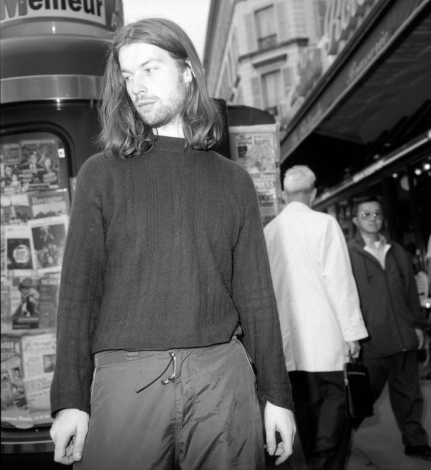

childhood.
Richard D. James, better known as Aphex Twin, was born on August 18, 1971, in Limerick, Ireland. Raised in Cornwall, England, James exhibited an early fascination with electronic gadgets and music. His childhood was marked by experimentation, as he delved into the world of sound and rhythm, laying the groundwork for his future as a musical pioneer.
uniqueness.
What sets Aphex Twin apart from his contemporaries is his fearless exploration of sonic boundaries. From his early releases in the 1990s to his groundbreaking albums like "Selected Ambient Works 85-92" and "Richard D. James Album," James has consistently pushed the envelope of electronic music. His ability to blend complex melodies with intricate rhythms creates a mesmerizing auditory experience that captivates audiences worldwide.
name history.
The moniker "Aphex Twin" has intrigued fans since its inception. Legend has it that James adopted the name as a teenager, inspired by a mysterious imaginary friend named Aphex. The addition of "Twin" reflects James' fascination with duality and the notion of parallel universes, adding an extra layer of intrigue to his already enigmatic persona.
rise to fame.
James' career took off in the early 1990s with the release of his debut EP, "Analogue Bubblebath." As Aphex Twin, he quickly gained a cult following for his innovative blend of ambient, techno, and acid house music. His legendary performances at clubs and raves solidified his reputation as a dynamic live act, earning him legions of devoted fans around the globe.
prelude.
INFO.
trip to russia.
Aphex Twin, the enigmatic electronic music pioneer, has had a complex relationship with Russia, marked by both fascination and challenges. His initial visit to Russia in 1994 was part of the Britronica festival in Moscow, an event aimed at introducing modern music to young Muscovites. However, the festival faced technical difficulties, with missing wires and equipment boxes leading to a near-cancellation of Aphex Twin's performance. Despite these setbacks, the festival went on, and Aphex Twin, whose real name is Richard D. James, managed to leave an impression on the Russian music scene.
The impact of Aphex Twin's music on Russian audiences cannot be overstated. His innovative approach to electronic music has influenced a generation of Russian electronic musicians, as evidenced by comparisons drawn between Russian artists and Aphex Twin's style. His influence extends beyond the borders of genre and has become a touchstone for authenticity and rebellion against the mainstream, resonating with younger generations, including Gen Z.
James's personal experiences in Russia have also been noteworthy. He reportedly lived in the Moscow suburb of Reutov for two years with his girlfriend and future wife, a period that seems to have had a significant influence on his work. His Grammy-winning album 'Syro' contains references to his time in Russia, including Russian language samples and track titles.
Despite the initial hiccups during his 1994 visit, Aphex Twin's subsequent interactions with Russia have been more positive. His unexpected appearance at a Moscow music venue in 2011 and his inclusion on a compilation by Russian DJ Nina Kraviz highlight his ongoing connection with the country's music scene.